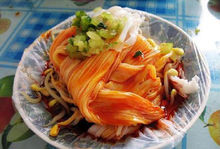
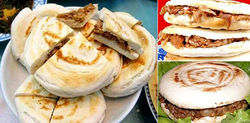
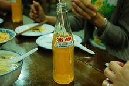

美味西安
在西安，你可以吃到粤菜、川菜、鲁菜、湘菜、淮扬菜、云南菜、新疆菜、贵州菜、东北菜等全国几十个菜系的佳肴，各地的上万种小吃，而且还能品尝到香港、澳门、台湾的各色美食。
- 西安的美食首先当推“两宴”和“两泡”。
- 所谓“两宴”，西安饭庄的陕西风味小吃宴和德发长饺子馆、解放路饺子馆的饺子宴。
- 所谓“两泡”，乃牛羊肉泡馍和葫芦头泡馍。
- 品尝西安众多的风味小吃是游西安的一大乐事。
三秦套餐
凉皮、肉夹馍和冰峰汽水被冠以“三秦美食”，“三秦美食”之名绝不是听起来这么简单的。仔细想想，能在陕西众多美食中脱颖而出， 所向披靡，过五关斩六将的荣获“三秦套餐”的殊荣，这三位“秦大人”要不是大有来头可早就要被飞砖拍死了。
内容展示
-

主食:特色凉皮
陕西的风味小吃中，凉皮是最受欢迎的品种之一
汉中米面皮，汉中属陕南，盛产大米，用大米面做面皮是汉中人首先发明，历史悠久。因风味独特，吃的人很多； 秦镇米面皮和汉中米面皮的区别主要在软硬和调料上。秦镇的米面皮所以有名，主要是辣椒油的制作很讲究，辣椒面放在上等的油中，加入花椒、茴香等大料小火反复熬制， 越熬越辣，越熬越香，辣油也越熬越红，越熬越亮；在陕西农村，也有用小麦面蒸凉皮的，农村人一般叫酿皮。酿皮的吃法和做法和米面皮无差异。但在西安回民中，酿皮的吃法却与众不同，它除了放醋、盐、味素、辣椒油外， 还要放芝麻酱，吃来别有风味，所以在西安，人们又把回民的这种凉皮叫做麻酱凉皮； 岐山擀面皮则是先擀成面，然后再蒸，蒸熟后再切成比凉皮稍宽的条状，吃法和米面皮基本一样。不同于米面皮的是，凉皮口感较硬，韧度高，有筋性。
-

配餐:肉夹馍
“中国汉堡”美名扬
肉夹馍，实际是两种食物的绝妙组合：腊汁肉，白吉馍。肉夹馍合腊汁肉、白吉馍为一体，互为烘托，将各自滋味发挥到极致。 馍香肉酥，回味无穷。腊汁肉历史悠久，闻名中国，配上白吉馍，有着中式汉堡的美誉，扬名中外，深受人们喜爱。腊汁肉由三十多种调料精心配制而成，由于选料精细， 火功到家，加上使用陈年老汤，因此所制的腊汁肉与众不同，具有色泽红润，气味芬芳，肉质软糯，糜而不烂，浓郁醇香，入口即化的独特风味。好的肉夹馍， 馍本身要外酥里嫩。好的腊汁肉用老汤老铫子煨出，肥肉不腻，瘦肉无渣，回味无穷。应当根据肉的肥瘦决定剁的粗细程度。趁热将现做的馍挑开， 夹入带汁剁过的腊汁肉，带上些肥肉和皮，汁水瞬间呛入馍中。
-

饮品:冰峰
从小到大都喝它
除了凉皮和肉夹馍的 “黄金搭档”之外，“梦幻套餐”的第三种小吃则有很多的变化。对于很多西安市民来说， “梦幻套餐”中的首选当然还是冰峰汽水。冰峰作为西安的一种知名本地品牌碳酸饮料，几乎可以说是：无人不知，无人不晓，西安人没有没喝过冰峰的。 而冰峰的一句广告语：从小就喝它，更是贴切的体现了冰峰无人能撼的霸主地位。走在西安街头，无论是中午， 还是晚上，无论是大街小巷，饭店宾馆，随处可见的是一碗凉皮，一瓶冰峰，吃着烤肉，喝着冰峰的景象。